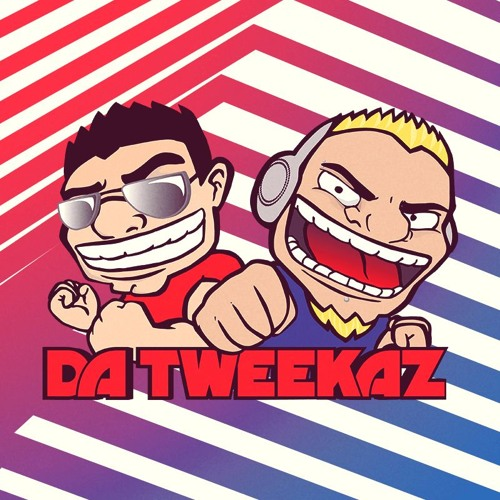

Kenth Kvien y Marcus Nordli estaban creando diferentes variedades de música popular onerosa antes de entrar en la escena del hardstyle. Después de que finalmente lo hicieran en 2007, enviaron promociones de sus canciones "Angeli Domini" y "Crowsong", que luego terminaron filtradas en sitios web polacos y rusos. Incluyeron el lanzamiento de "Angeli Domini" en Spider Records que tuvieron su lanzamiento inicial en el importante sello de hardstyle Dirty Workz en 2010. En 2012, la pareja se mudó a los Países Bajos por un breve período de tiempo, simplemente para evitar volar arriba y abajo por los numerosos festivales en los Países Bajos y Bélgica.
Apodados informalmente "Kings of Cheese", Da Tweekaz se especializa en melodías animadas y enérgicas y un sentido del humor tonto, que se ve mejor en los videos musicales oficiales de "Wodka" y "Tequila", que muestran un consumo excesivo de alcohol y vómitos. También "remezclaron" los himnos de Defqon.1 de 2015 y 2016, usando sus característicos chirridos de patos de goma y nombrándolos respectivamente "No Ducks No Glory" y "DragonDucks".
Todavía hacen hardstyle pero han comenzado a hacerse un nombre en la escena hardcore, con el nombre Tweekacore (la versión de 175 BPM de Da Tweekaz).
Álbumes
Time 2 Shine (2012)
#Tweekay14: The Ultimate Collection (2014)
#Tweekay16: The Ultimate Collection (2016)
Singles

2008:
Angeli Domini
The Past/Da Bomba
2010:
DNA EP
Examination of Time
2011
Nothingness EP
People Against Porn EP
2012
Become EP
2013
Real Love
Island Refuge (The Qontinent 2013 Anthem) (con Wasted Penguinz)
2014
#Tweekay14
Let It Go (feat. Elke Diels)
Hewwego
2015
Wodka
2016
Freedom (feat. Neilio)
Heroes (con Darren Styles)
#Tweekay16
See the Light (con Code Black & Paradise)
Tequila
Tomorrow (feat. Matthew Steeper)
2017
DRKNSS (con Sub Zero Project)
D.W.X. (10 Years Dirty Workz Mix) (con Coone)
How Far I’ll Go
Komon
Game of Thrones
Heart like Mine (con Code Black & Adrenalize feat. Matthew Steeper)
2018
Respect (con Anklebreaker)
Essence of Eternity (Reverze Anthem 2018)
Partystarter (con Darren Styles)
This is Special (con Sephyx)
Bring Me To Life (con HALIENE)
Jägermeister
Back And Forth
Forever
2019
Because of You (con Refuzion)
Scatman
The Elite (con Coone y Hard Driver, juntos conocidos como The Elite)
Tweekalution
We Are Fighters (con Destructive Tendencies)
Anything (con D-Sturb)
Circle Of Life (con David Spekter)
Keep On Rockin‘ (con Crystal Lake)
The Wire (con Diandra Faye)
Take Me Away (con Sound Rush)
2020
Adrenaline (con Wildstylez y XCEPTION)
Power Of Perception (con Coone y Hard Driver, juntos conocidos como The Elite)
We Made It (con LNY TNZ y The Kemist)
Moskau (con Harris & Ford)
The Sound Of (con Coone y Hard Driver, juntos conocidos como The Elite, y Diandra Faye)